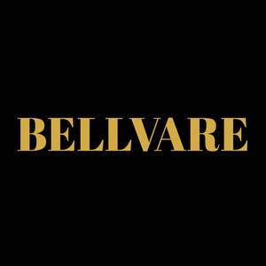

Trade Mark Journal No.2025/045 7 November 2025
UK00004280071 17 October 2025 (18,25)

- Class 18
- Leather; Leather and imitation leather; Leather and imitations of leather; Leather cloth; Tanned leather; Saddlery of leather; Polyurethane leather; Leather handbags; Laces (Leather -); Leather laces; Synthetic leather; Leather for shoes; Straps (Leather -); Leather straps; Leather thongs; Leather briefcases; Leather purses; Boxes of leather or leather board; Leather for furniture; Leather bags; Leather wallets; Vegan leather; Studs of leather; Imitation leather; Leather (Imitation -); Straps of leather [saddlery]; Leather pouches; Pouches of leather; Leather cord; Moleskin [imitation of leather]; Moleskin [imitation leather]; Leather cords; Girths of leather; Leashes (Leather -); Leather leashes; Leather for harnesses; Imitations of leather; Leather suitcases; Imitation leather bags; Unworked leather; Bands of leather; Briefcases [leather goods]; Handbags made of leather; All-purpose leather straps; Briefcases made of leather; Leather boxes; Boxes of leather; Leather twist; Leather luggage straps; Leather cases; Leather thread; Thread (Leather -); Trimmings of leather for furniture; Furniture (Leather trimmings for -); Leather trimmings for furniture; Labels of leather; Belts (Leather shoulder -); Leather shoulder belts; Straps made of imitation leather; Key-cases of leather and skins; Valves of leather; Bags made of leather; Harness made from leather; Furniture coverings of leather; Coverings (Furniture -) of leather; Bags made of imitation leather; Straps (Leather shoulder -); Leather shoulder straps; Leather bags and wallets; Cases of imitation leather; Chin straps, of leather.
- Class 25
- Shirts; Turtleneck shirts; Short-sleeved shirts; Dress shirts; Long-sleeved shirts; Short-sleeve shirts; Shirt yokes; Yokes (Shirt -); Open-necked shirts; Collared shirts; Short-sleeved T-shirts; Polo shirts; Corduroy shirts; Shirt fronts; Knit shirts; Camouflage shirts; Button-front aloha shirts; Mock turtleneck shirts; Sweat shirts; Shirts for suits; Casual shirts; Shirts and slips; Pique shirts; Maternity shirts; Rugby shirts; Football shirts; Hooded sweat shirts; Woven shirts; Dress pants; Aloha shirts; Soccer shirts; Golf shirts; T-shirts; Bib shorts; Night shirts; Trousers shorts; Ramie shirts; Sport shirts; Sleeveless jerseys; Tennis shirts; Sleep shirts; Fishing shirts; Jeans; Shorts [clothing]; Yoga shirts; Denim pants; Under shirts; Button down shirts; Leggings [trousers]; Hunting shirts; Pants; Tee-shirts; Sports shirts with short sleeves; Boy shorts [underwear]; Blue jeans; Sports shirts; Trousers; Moisture-wicking sports shirts; V-neck sweaters; Nappy pants [clothing]; Printed t-shirts; Corduroy pants; Denim jeans; Camouflage pants; Sleeveless jackets; Men's dress socks; Jerseys [clothing]; Babies' pants [clothing]; Babies' pants [underwear]; Embroidered clothing; Corduroy trousers; Fleece shorts; Shorts; Chino pants; Sweat pants; Sweatpants; Sleeved jackets; American football shirts; Turtleneck sweaters; Bib overalls for hunting; Polo sweaters; Bib tights; Maternity pants; Golf trousers; Denims [clothing]; Casual trousers; Trouser socks; Sweat shorts; Maternity shorts; Trousers for sweating; Capri pants; Wristbands [clothing]; Slacks; Sleeveless pullovers; Warm-up pants; Pirate pants; Undershirts; Dress shoes; Padded shirts for athletic use; Snowboard trousers; Leather pants; Khakis; Skirt suits; Baby pants; Turtleneck pullovers; Rugby shorts; Vest tops; Polo knit tops; Moisture-wicking sports pants; Denim jackets; Overalls; Tracksuit tops; Romper suits; Collars [clothing]; Tracksuit bottoms; Jogging pants; Mock turtleneck sweaters; Golf shorts; Underwear; Cycling pants; Turtleneck tops; Sweatshirts; Short overcoat for kimono (haori); Nurse pants; Clothes; Trousers of leather; Knitted underwear; Leather shoes; Leather jackets; Leather waistcoats; Leather garments; Leather slippers; Clothing of leather; Leather (Clothing of -); Leather clothing; Leather coats; Leather dresses; Suits of leather; Leather suits; Leather headwear; Leather belts [clothing]; Clothing of imitations of leather; Leather (Clothing of imitations of -); Belts made of leather; Imitation leather dresses; Belts made from imitation leather; Clothing made of leather; Slippers made of leather; Suede jackets; Clothing made of imitation leather; Stretch pants; Ski pants; Yoga pants; Waterproof pants; Lounge pants; Cargo pants; Weatherproof pants; Trouser straps; Track pants; Sleep pants; Wind pants; Ski trousers; Leggings [leg warmers]; Pants (Am.); Snow pants; Hunting pants; Waterproof trousers; Baselayer bottoms; Padded pants for athletic use; Pajama bottoms; Culotte skirts; Horse-riding pants; Tap pants; Rain trousers; Jogging bottoms [clothing]; Sports pants; Riding trousers; Short trousers; Sweat bottoms; Men's and women's jackets, coats, trousers, vests; Pantaloons; Jogging bottoms; Bottoms [clothing]; Men's underwear; Swim shorts; Pleated skirts; Blouson jackets; Breeches for wear; Jacket liners; Yoga bottoms; Sweatshorts; Sliding shorts; Sweat jackets; Culottes; Briefs [underwear]; Sweat-absorbent underwear; Infants' trousers; Dress suits; Baselayer tops; Gussets for bathing suits [parts of clothing]; Pleated skirts for formal kimonos (hakama); Padded shorts for athletic use; Sweat suits; Jogging suits; Gussets for tights [parts of clothing]; Gussets for underwear [parts of clothing]; Maternity leggings; American football pants; Fleece jackets; Underwear (Anti-sweat -); Anti-sweat underwear; Suits; Suit coats; Zoot suits; Bathing suits; Suits (Bathing -); Bathing suit cover-ups; One-piece suits; Swim suits; Body suits; Sailor suits; Leisure suits; Boiler suits; Swimming suits; Down suits; Warm-up suits; Jumper suits; Union suits; Gym suits; Shell suits; Karate suits; Men's suits; Flying suits; Ski suits; Evening suits; Jump Suits; Play suits; Rain suits; Running Suits; Pram suits; Dinner suits; Track suits; Training suits; Ballet suits; Taekwondo suits; Judo suits; Wind suits; Bathing suits for men; Suits made of leather; Women's suits; Snow suits; Aikido suits; Warm up suits; Waterproof suits for motorcyclists; Motorcycle rain suits; Ladies' suits; Three piece suits [clothing]; Ski suits for competition; Motorcycle riding suits; Snow boarding suits; Clothing for leisure wear; Bathing costumes; Fancy dress costumes; Jogging outfits; Tuxedo belts; Dress shields; Shields (Dress -); Ties [clothing]; Jogging sets [clothing]; Leisure wear; Jackets; Windproof jackets; Rainproof jackets; Bomber jackets; Quilted jackets [clothing]; Waterproof jackets; Jackets [clothing]; Camouflage jackets; Sheepskin jackets; Knit jackets; Motorcycle jackets; Wind-resistant jackets; Fur jackets; Weatherproof jackets; Shell jackets; Padded jackets; Snowboard jackets; Reversible jackets; Ski jackets; Rain jackets; Casual jackets; Riding jackets; Warm-up jackets; Polar fleece jackets; Fur coats and jackets; Dinner jackets; Wind jackets; Heavy jackets; Hunting jackets; Bed jackets; Smoking jackets; Light-reflecting jackets; Jackets being sports clothing; Safari jackets; Jackets (Stuff -) [clothing]; Stuff jackets [clothing]; Down jackets; Track jackets; Donkey jackets; Fishing jackets; Fleece vests; Windproof clothing; Korean outer jackets worn over basic garment [Magoja]; Sports jackets; Stuff jackets; Long jackets; Quilted vests; Wind resistant jackets; Rainproof clothing; Fishermen's jackets; Gloves [clothing]; Gloves as clothing; Outerwear; Coats of denim; Denim coats; Waistcoats [vests]; Duffle coats; Wind-resistant vests; Golf clothing, other than gloves; Camouflage vests; Camouflage gloves; Duffel coats; Frock coats; Waterproof clothing; Motorcycle gloves; Oilskins [clothing]; Water-resistant clothing; Fingerless gloves as clothing; Waterproof boots; Long sleeved vests; Dungarees; Blouses; Tank-tops; Sneakers; Tops [clothing]; Gabardines [clothing]; Gym shorts; Playsuits [clothing]; Pockets for clothing; Trousers for children; Bermuda shorts; Sweaters; Thong sandals; Tennis shorts; Shoes; Insoles [for shoes and boots]; Insoles for shoes and boots; High-heeled shoes; Wooden shoes [footwear]; Sneakers [footwear]; Slip-on shoes; Tongues for shoes and boots; Jogging shoes; Tennis shoes; Ballet shoes; Esparto shoes or sandals; Walking shoes; Rubber shoes; Shoes soles for repair; Pullstraps for shoes and boots; Hiking shoes; Basketball shoes; Esparto shoes or sandles; Athletic shoes; Running shoes; Soccer shoes; Sandals and beach shoes; Volleyball shoes; Shoe soles; Waterproof shoes; Heel pieces for shoes; Dance shoes; Snowboard shoes; Canvas shoes; Foot volleyball shoes; Cycling shoes; Wooden shoes; Shoes for foot volleyball; Shoes for leisurewear; Sports shoes; Platform shoes; Golf shoes; Footwear soles; Soles for footwear; Athletics shoes; Sport shoes; Yoga shoes; Hockey shoes; Mountaineering shoes; Baby shoes; Roller shoes; Football shoes; Riding shoes; Insoles for footwear; Gymnastic shoes; Bowling shoes; Baseball shoes; Rain shoes; Aqua shoes; Training shoes; Boxing shoes; Handball shoes; Fittings of metal for boots and shoes; Skiing shoes; Beach shoes; Flat shoes; Nursing shoes; Shoes for casual wear; Leisure shoes; Shoes for infants; Stiffeners for shoes; Rugby shoes; Heel protectors for shoes; Women's shoes; Footwear; Work shoes; Flip-flops for use as footwear; Tap shoes; Hidden heel shoes; Apres-ski shoes; Deck shoes; Driving shoes; Pumps [footwear]; Infants' shoes; Sandals; Shoe soles for repair; Spiked running shoes; Studs for football shoes; Anglers' shoes; Cleats for attachment to sports shoes; Boots; Trainers [footwear]; Shoe straps; Protective metal members for shoes and boots; Inner socks for footwear; Rubbers [footwear]; Wedge sneakers; Shoe uppers; Basketball sneakers; Knitted baby shoes; Trainers; Gym boots; Referees uniforms.
Smart Savers E-commerce ltd